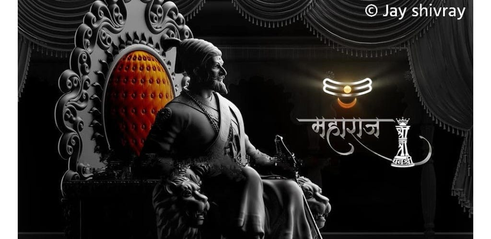

CHHATRAPATI SHIVAJI MAHARAJ:
The Founder Of Maratha Kingdom

Shivaji I was an Indian ruler and a member of the Bhonsle Maratha clan. Shivaji carved out his own independent kingdom from the declining Adilshahi Sultanate of Bijapur that formed the genesis of the Maratha Empire.In 1674, he was formally crowned the Chhatrapati of his realm at Raigad Fort.
Shivaji was descended from a line of prominent nobles. India at the time of his birth, in 1630, was under Muslim rule: the Mughals in the north and the Muslim sultans of Bijapur and Golconda in the south. All three ruled by right of conquest, with no pretense that they had any obligations toward those who they ruled. Shivaji, whose ancestral estates were situated in the Deccan, in the realm of the Bijapur sultans, found the Muslim oppression and religious persecution of the Hindus so intolerable that, by the time he was 16, he convinced himself that he was the divinely appointed instrument of the cause of Hindu freedom—a conviction that was to sustain him throughout his life.
he founding of the Maratha Swaraj involved a` relentless struggle for over thirty years. Maharaj realized that now the Swaraj needed to win general recognition as a sovereign, independent state. For legal recognition a formal coronation was necessary. On 6th June 1674, Shivaji Maharaj was crowned at Raigad by Gagabhatt, a learned pandit of Benaras. He now became the Chhatrapati of the Swaraj. As a symbol of sovereignty, Shivaji Maharaj started a new era commencing from the date of his coronation. It is known as Rajyabhisheka shaka. Shivaji Maharaj thus became the founder of a new era. On the occasion of the coronation, special coins were minted- a gold coin called hon and a copper coin called Shivraj with the legend Shri Raja Shivachhatrapati inscribed on them. Thereafter, all royal correspondence carried the words, 'Kshatriyakulaawatansa Shri Raja Shivachhatrapati'.
If you have time, you should read more about this incredible human being on this
Wikipedia entry.